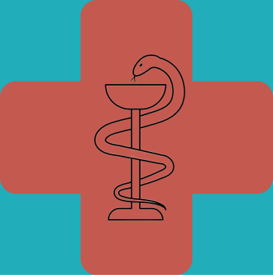
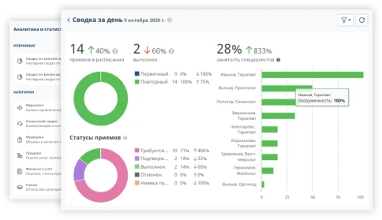
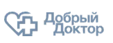
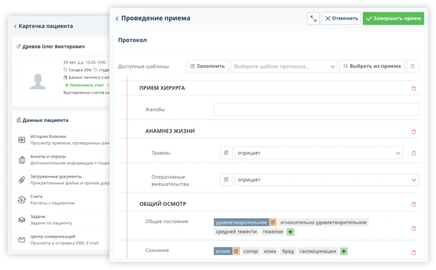
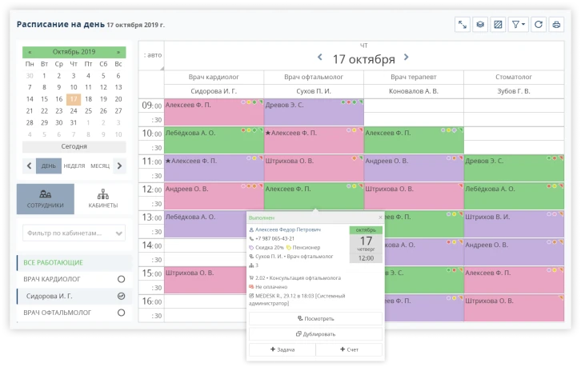
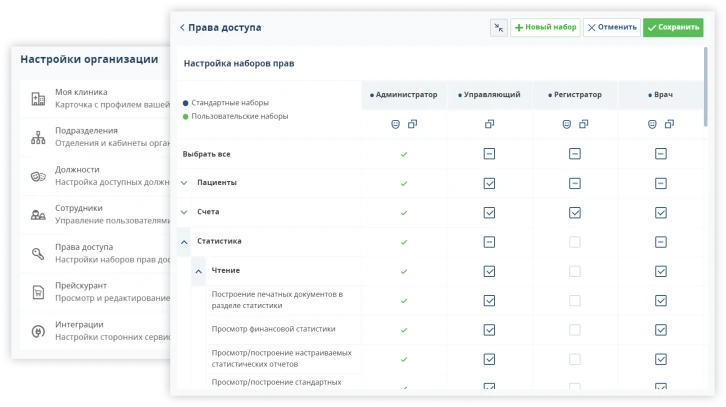

MIS

Медицинская информационная система MIS
Надежная облачная платформа для оперативного управления и организации работы частной клиники. Легко настраивается под ваши бизнес-процессы и помогает анализировать и улучшать работу каждого сотрудника. Работает онлайн с любого устройства.
Подключиться бесплатно14

лет на рынке
10+

пользователей
5

регионов
Вы в отличной компании
Присоединяйтесь к тысячам частных медицинских центров в 35 странах, которые улучшают свою работу, ведут учет и оказывают помощь пациентам в МИС MIS.

Доступ в любой точке мира
Удаленно ведите мониторинг работы медицинского центра с телефона и отслеживайте выполнение важных задач онлайн с помощью облачного решения. Врачи могут работать в медицинской информационной системе MIS при вызовах на дом, просто захватив с собой планшет. Благодаря возможности проводить дистанционные приёмы, вы сможете подключаться к пациентам из других городов и стран. Функционал платформы позволяет медицинской организации вести работу даже из дома: связывайтесь с пациентами на видеоконсультациях и заполняйте их электронные медицинские карты онлайн!
-
мгновенный доступ в медицинскую информационную систему с любого устройства
-
модуль для онлайн-записи и телемедицинские приёмы
-
интеграция системы с сервисами онлайн-платежей

Детальная аналитика эффективности вашей клиники
Удаленно ведите мониторинг работы медицинского центра с телефона и отслеживайте выполнение важных задач онлайн с помощью облачного решения. Врачи могут работать в медицинской информационной системе MIS при вызовах на дом, просто захватив с собой планшет. Благодаря возможности проводить дистанционные приёмы, вы сможете подключаться к пациентам из других городов и стран. Функционал платформы позволяет медицинской организации вести работу даже из дома: связывайтесь с пациентами на видеоконсультациях и заполняйте их электронные медицинские карты онлайн!
-
обширная библиотека из готовых комплексных отчётов
-
конструктор для создания новых отчётов
-
наглядные графические отчёты
Легко управляйте расписанием и держите всё под контролем с МИС MIS
Удаленно ведите мониторинг работы медицинского центра с телефона и отслеживайте выполнение важных задач онлайн с помощью облачного решения. Врачи могут работать в медицинской информационной системе MIS при вызовах на дом, просто захватив с собой планшет. Благодаря возможности проводить дистанционные приёмы, вы сможете подключаться к пациентам из других городов и стран. Функционал платформы позволяет медицинской организации вести работу даже из дома: связывайтесь с пациентами на видеоконсультациях и заполняйте их электронные медицинские карты онлайн!
-
синхронизация с Google-календарём
-
управление задачами и напоминаниями
-
аналитика загруженности сотрудников медицинского учреждения

Единый источник информации о всех ваших пациентах
Удаленно ведите мониторинг работы медицинского центра с телефона и отслеживайте выполнение важных задач онлайн с помощью облачного решения. Врачи могут работать в медицинской информационной системе MIS при вызовах на дом, просто захватив с собой планшет. Благодаря возможности проводить дистанционные приёмы, вы сможете подключаться к пациентам из других городов и стран. Функционал платформы позволяет медицинской организации вести работу даже из дома: связывайтесь с пациентами на видеоконсультациях и заполняйте их электронные медицинские карты онлайн!
-
интеграция системы с сервисами онлайн-платежей
-
счета и платежи, оказанные услуги, задачи по клиенту
-
электронные медицинские карточки клиентов
Инструменты для профессиональной коммуникации с пациентами
Удаленно ведите мониторинг работы медицинского центра с телефона и отслеживайте выполнение важных задач онлайн с помощью облачного решения. Врачи могут работать в медицинской информационной системе MIS при вызовах на дом, просто захватив с собой планшет. Благодаря возможности проводить дистанционные приёмы, вы сможете подключаться к пациентам из других городов и стран. Функционал платформы позволяет медицинской организации вести работу даже из дома: связывайтесь с пациентами на видеоконсультациях и заполняйте их электронные медицинские карты онлайн!
-
автоматические SMS и Email рассылки
-
модуль онлайн-записи на прием с возможностью выбора нужной услуги
-
организация массовых рассылок по SMS и электронной почте

Информация надёжно защищена в медицинской информационной системе MIS
Удаленно ведите мониторинг работы медицинского центра с телефона и отслеживайте выполнение важных задач онлайн с помощью облачного решения. Врачи могут работать в медицинской информационной системе MIS при вызовах на дом, просто захватив с собой планшет. Благодаря возможности проводить дистанционные приёмы, вы сможете подключаться к пациентам из других городов и стран. Функционал платформы позволяет медицинской организации вести работу даже из дома: связывайтесь с пациентами на видеоконсультациях и заполняйте их электронные медицинские карты онлайн!
-
защита соединения и шифрование данных
-
резервные копии данных
-
функции настройки прав доступа
Отзывы клиентов
Владислав Одинцов
Клиника доктора Одинцова, главный врач, д.м.н.
Главным при выборе МИС MIS для нас была простота использования, в частности для администраторов. Очень удобно, что даже со смартфона можно увидеть текущее положение дел в медицинском центре — можно всегда оставаться мобильным. Есть финансовая статистика, данные по приходу пациентов. Кроме оперативного и финансового учета, нам нравится удобный интерфейс для врачей — в версиях для ПК и смартфонов выполнять нужные действия легко. MIS позволяет оставаться всегда на связи и упрощает составление протоколов и других документов с помощью готовых форм.
Сергей Денисович
Клиника доктора Одинцова, главный врач, д.м.н.
MIS позволяет оставаться всегда на связи и упрощает составление протоколов и других документов с помощью готовых форм.Очень удобно,что даже со смартфона можно увидеть текущее положение дел в медицинском центре — можно всегда оставаться мобильным. Есть финансовая статистика, данные по приходу пациентов. Кроме оперативного и финансового учета, нам нравится удобный интерфейс для врачей — в версиях для ПК и смартфонов выполнять нужные действия легко.
Виктория Игоревна
Клиника доктора Одинцова, главный врач, д.м.н.
Очень удобно,что даже со смартфона можно увидеть текущее положение дел в медицинском центре — можно всегда оставаться мобильным. Есть финансовая статистика, данные по приходу пациентов. Кроме оперативного и финансового учета, нам нравится удобный интерфейс для врачей — в версиях для ПК и смартфонов выполнять нужные действия легко. MIS позволяет оставаться всегда на связи и упрощает составление протоколов и других документов с помощью готовых форм.
Остались вопросы?
Отправьте заявку для получения доступа к тестовому периоду. Наш менеджер ответит на все вопросы и поможет выбрать оптимальный тарифный план для конкретного вида деятельности медцентра.
Подключиться бесплатно